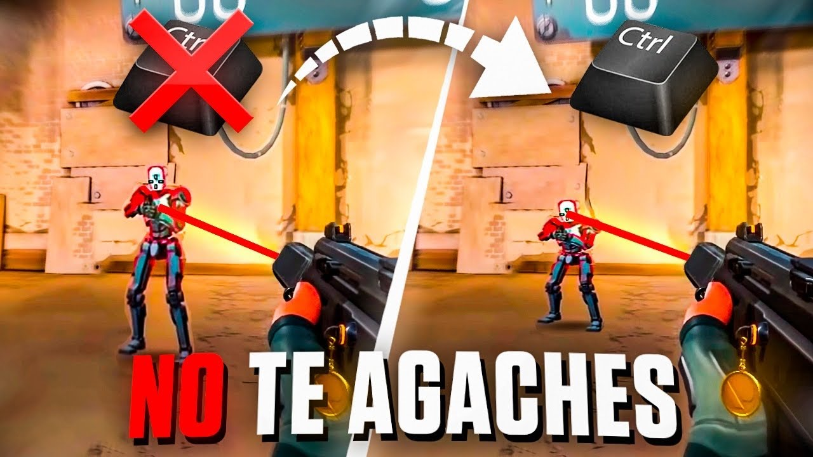
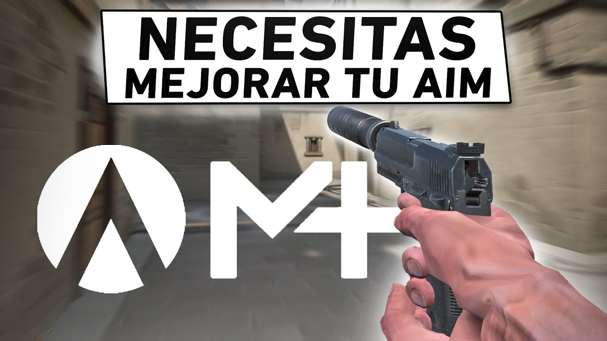
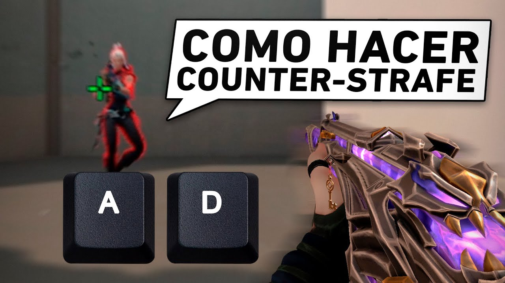

¿Quieres llevar tu juego al siguiente nivel? En nuestra plataforma, te proporcionamos información exclusiva y detallada sobre cómo mejorar tu Gamesense en juegos como Counter-Strike: Global Offensive (CS:GO) y Valorant. Descubre estrategias avanzadas para anticipar movimientos, optimiza tu posicionamiento en el mapa, aprende a analizar partidas de manera efectiva y perfecciona tu capacidad para tomar decisiones rápidas y precisas en momentos cruciales. Con nuestro contenido, te convertirás en un jugador más astuto, estratégico y competitivo. ¡Atrévete a potenciar tu Gamesense y domina el juego como nunca antes!
NO TE AGACHES AL DISPARAR

No agacharte al disparar en juegos como Valorant o Counter-Strike 2 es importante por varias razones:
Precisión y Control: Agacharte reduce tu movilidad y puede afectar tu precisión al disparar. Al estar agachado, tu personaje es más lento para reaccionar y moverse, lo que puede dificultar apuntar con precisión a objetivos móviles o realizar ajustes rápidos de puntería.
Exposición al Fuego enemigo: Al agacharte, tu perfil se reduce, pero también te vuelves más predecible para los enemigos. Si te agachas en un lugar visible, es más probable que recibas disparos en la cabeza o en áreas vulnerables, ya que tu movimiento es más limitado y tu posición es más fija.
Tiempo de Recuperación: Después de agacharte, tu personaje necesita tiempo para levantarse y recuperar la movilidad completa. Durante este tiempo, estás en desventaja si necesitas moverte rápidamente para esquivar o cambiar de posición.
Uso Estratégico del Agacharse: Si bien no es recomendable agacharse al disparar en situaciones normales, hay momentos estratégicos en los que agacharse puede ser útil, como al esconderse detrás de cobertura baja para evitar ser visto por enemigos a distancia.
En resumen, agacharse al disparar puede reducir tu precisión, exponerte al fuego enemigo y limitar tu movilidad, por lo que es importante utilizar el agacharse estratégicamente y evitar hacerlo de forma indiscriminada durante los enfrentamientos.
MEJORA TU AIM

hay varias formas efectivas de mejorar tu aim en juegos como CS:GO y Valorant. Aquí te dejo algunas sugerencias:
Práctica constante: Dedica tiempo regularmente a practicar tu aim. Puedes hacerlo en servidores de entrenamiento, campos de tiro o mapas diseñados específicamente para mejorar el aim.
Ejercicios de puntería: Realiza ejercicios de puntería que se centren en la precisión y rapidez de tus disparos. Esto incluye apuntar a objetivos estáticos y en movimiento, así como trabajar en la corrección de tu puntería.
Ajustes de sensibilidad: Experimenta con la sensibilidad de tu mouse para encontrar la configuración que te resulte más cómoda y precisa. Una sensibilidad adecuada puede mejorar significativamente tu aim.
Práctica de flick shots: Practica los flick shots, que son disparos rápidos y precisos que requieren movimientos rápidos de tu mouse para apuntar al objetivo. Esto te ayudará a mejorar tu capacidad de reacción y precisión en situaciones de combate.
Juega en partidas realistas: Participa en partidas competitivas o en modo competitivo en línea para enfrentarte a jugadores reales y poner a prueba tu aim en situaciones de juego realistas
Analiza tu rendimiento: Después de cada sesión de práctica o partida, analiza tu rendimiento y identifica áreas de mejora en tu aim. Trabaja en corregir errores y en fortalecer tus puntos fuertes.
Mantén la calma: Mantén la calma y la concentración durante las partidas. El estrés o la presión pueden afectar tu aim, así que practica técnicas de respiración y relajación para mantener la precisión en momentos cruciales.
Al combinar estos consejos y dedicar tiempo y esfuerzo a mejorar tu aim de manera constante, verás una mejora significativa en tu rendimiento en juegos de disparos.
MASTERIZA TU COUNTER STRAFE

El "counter strafe" es una técnica utilizada en juegos como Counter-Strike: Global Offensive (CS:GO) para detener rápidamente el movimiento lateral y mejorar la precisión al disparar. Consiste en contrarrestar el momentum de tu personaje al moverte en una dirección y luego rápidamente cambiar de dirección o presionar la tecla opuesta (por ejemplo, si te estás moviendo hacia la izquierda, presionar la tecla derecha y viceversa) justo antes de disparar.
Esta técnica es especialmente útil cuando estás en movimiento y necesitas detenerte rápidamente para disparar con precisión, ya que reduce el tiempo que tardas en alcanzar la precisión máxima después de moverte. Al aplicar el counter strafe correctamente, puedes mejorar tu capacidad para disparar con precisión mientras te desplazas, lo que es fundamental en situaciones de combate en juegos como CS:GO.